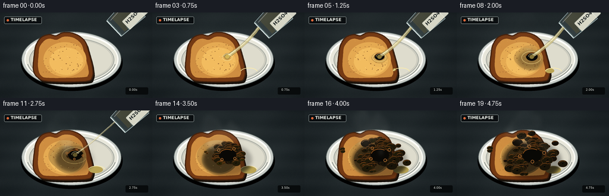
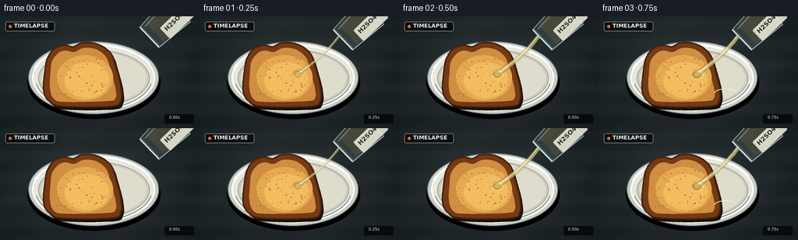

CODING AGENTS AS PIXEL WORLD MODELS
traex/GPT-5.6-Sol · material_0038
点击播放 · 原生 RGB 像素
逐轮保存的候选
回放视频、检查图与代码变化。
每份候选均可单独播放。实际图片检查记录在下方工具轨迹中。
候选 01播放与检查图
点击播放 · 原生 RGB 像素
展开代码变化
--- 上一保存版本
+++ 本次保存版本
@@ -0,0 +1,301 @@
+from pathlib import Path
+import math
+import numpy as np
+from PIL import Image, ImageDraw, ImageFont, ImageFilter
+import artifact_io
+
+# PixelWorld case: procedural RGB video, no external assets.
+CASE_DIR = Path(__file__).resolve().parent
+W, H, N = 256, 144, 20
+S = 4
+rng = np.random.default_rng(38117)
+
+try:
+ FONT_BOLD = ImageFont.truetype('/usr/share/fonts/truetype/dejavu/DejaVuSans-Bold.ttf', 7*S)
+ FONT_SMALL = ImageFont.truetype('/usr/share/fonts/truetype/dejavu/DejaVuSans.ttf', 5*S)
+ FONT_CHEM = ImageFont.truetype('/usr/share/fonts/truetype/dejavu/DejaVuSans-Bold.ttf', 8*S)
+except OSError:
+ FONT_BOLD = FONT_SMALL = FONT_CHEM = ImageFont.load_default()
+
+def sc(v):
+ return int(round(v*S))
+
+def box(b):
+ return tuple(sc(x) for x in b)
+
+def pts(p):
+ return [(sc(x), sc(y)) for x, y in p]
+
+def smoothstep(a, b, x):
+ if a == b: return float(x >= b)
+ u = max(0.0, min(1.0, (x-a)/(b-a)))
+ return u*u*(3-2*u)
+
+def catmull(control, samples=8, closed=True):
+ p = [np.array(x, float) for x in control]
+ if closed:
+ ext = [p[-1]] + p + [p[0], p[1]]
+ count = len(p)
+ else:
+ ext = [p[0]] + p + [p[-1]]
+ count = len(p)-1
+ out = []
+ for i in range(count):
+ p0,p1,p2,p3 = ext[i:i+4]
+ for j in range(samples):
+ t=j/samples; t2=t*t; t3=t2*t
+ q=0.5*((2*p1)+(-p0+p2)*t+(2*p0-5*p1+4*p2-p3)*t2+(-p0+3*p1-3*p2+p3)*t3)
+ out.append(tuple(q))
+ return out
+
+def bezier(p0,p1,p2,p3,n=40):
+ out=[]
+ for u in np.linspace(0,1,n):
+ v=1-u
+ out.append((v**3*p0[0]+3*v*v*u*p1[0]+3*v*u*u*p2[0]+u**3*p3[0],
+ v**3*p0[1]+3*v*v*u*p1[1]+3*v*u*u*p2[1]+u**3*p3[1]))
+ return out
+
+# Stable materials and reaction details.
+crumbs = [(rng.uniform(71,151), rng.uniform(48,106), rng.uniform(.25,1.0), rng.uniform(0,1)) for _ in range(115)]
+char_nodes=[]
+for _ in range(92):
+ # Elliptic cloud around impact, farther cells emerge later.
+ dx=float(rng.normal(0,23)); dy=float(rng.normal(0,15))
+ d=min(1.25, math.sqrt((dx/38)**2+(dy/26)**2))
+ activation=np.clip(.04+.48*d+rng.uniform(-.08,.12),0,.76)
+ char_nodes.append((dx,dy,float(rng.uniform(2.2,7.5)),float(activation),float(rng.uniform(0,1))))
+smoke_seeds=[(rng.uniform(-1,1),rng.uniform(-1,1),rng.uniform(.7,1.3),rng.uniform(0,6.28)) for _ in range(14)]
+
+# Toast geometry.
+outer_ctrl=[(63,109),(56,95),(58,68),(61,54),(69,42),(82,37),(94,39),(105,34),(119,34),(132,39),(143,49),(149,67),(155,91),(155,108),(143,116),(81,116)]
+inner_ctrl=[(69,106),(64,92),(65,69),(67,57),(75,47),(84,44),(95,46),(106,41),(118,41),(128,45),(137,54),(142,70),(148,93),(148,105),(138,109),(83,110)]
+outer_poly=catmull(outer_ctrl,10)
+inner_poly=catmull(inner_ctrl,10)
+
+def draw_background(frame_index):
+ yy,xx=np.mgrid[0:H*S,0:W*S]
+ # Cool charcoal lab bench with soft pool of light and stable fine grain.
+ d=np.sqrt(((xx-W*S*.47)/(W*S*.75))**2+((yy-H*S*.49)/(H*S*.95))**2)
+ light=np.clip(1-d,0,1)
+ base=np.zeros((H*S,W*S,3),dtype=np.float32)
+ base[:]=[19,25,28]
+ base += light[...,None]*np.array([25,28,27])
+ # Fine brushed surface texture (deterministic, stable over all frames).
+ noise=np.random.default_rng(900).normal(0,2.0,(H*S,W*S,1))
+ bands=(2.0*np.sin(yy/18.0)+1.2*np.sin((xx+yy)/55.0))[...,None]
+ base += noise+bands
+ return Image.fromarray(np.uint8(np.clip(base,0,255)),'RGB').convert('RGBA')
+
+def draw_plate(im):
+ d=ImageDraw.Draw(im,'RGBA')
+ # Contact shadow, ceramic plate body, raised rim and subtle reflection.
+ d.ellipse(box((35,38,206,132)), fill=(0,0,0,105))
+ d.ellipse(box((36,32,204,126)), fill=(199,204,199,255), outline=(92,102,101,255), width=sc(1))
+ d.ellipse(box((41,36,199,122)), fill=(232,231,219,255), outline=(255,255,247,220), width=sc(2))
+ d.ellipse(box((49,43,192,116)), fill=(205,204,191,255), outline=(152,158,151,170), width=sc(1))
+ d.ellipse(box((53,46,188,113)), fill=(222,220,205,255))
+ # Acid-safe glassy rim highlight.
+ d.arc(box((40,35,200,123)), 196, 336, fill=(255,255,253,210), width=sc(2))
+ d.arc(box((45,40,195,120)), 10, 170, fill=(113,122,119,90), width=sc(1))
+
+def draw_toast(im, reaction):
+ d=ImageDraw.Draw(im,'RGBA')
+ # Deep soft shadow establishes the slice above the plate.
+ d.polygon(pts([(x+3,y+4) for x,y in outer_poly]), fill=(24,17,10,105))
+ d.polygon(pts(outer_poly), fill=(117,58,20,255), outline=(72,37,17,255))
+ d.line(pts(outer_poly+[outer_poly[0]]), fill=(69,34,14,230), width=sc(2), joint='curve')
+ d.polygon(pts(inner_poly), fill=(207,142,65,255))
+ # Toasted center gradient made from translucent inset lobes.
+ d.ellipse(box((73,50,145,108)), fill=(229,170,82,70))
+ d.ellipse(box((83,59,140,105)), fill=(242,188,95,38))
+ # Baked spots and pores, fixed in place.
+ mask=Image.new('L',im.size,0); md=ImageDraw.Draw(mask); md.polygon(pts(inner_poly),fill=255)
+ tex=Image.new('RGBA',im.size,(0,0,0,0)); td=ImageDraw.Draw(tex,'RGBA')
+ for x,y,r,v in crumbs:
+ if v<.62:
+ col=(105,54,23,int(35+60*v))
+ td.ellipse(box((x-r,y-r*.62,x+r,y+r*.62)),fill=col)
+ else:
+ col=(255,213,132,int(18+28*v))
+ td.ellipse(box((x-r*.7,y-r*.5,x+r*.7,y+r*.5)),fill=col)
+ tex.putalpha(Image.composite(tex.getchannel('A'),Image.new('L',im.size,0),mask))
+ im.alpha_composite(tex)
+
+ # Wet acid bloom: translucent amber at first, then a ragged brown/black stain.
+ if reaction>0:
+ wet=Image.new('RGBA',im.size,(0,0,0,0)); wd=ImageDraw.Draw(wet,'RGBA')
+ radius=3+48*smoothstep(0,.72,reaction)
+ layers=22
+ for k in range(layers,0,-1):
+ u=k/layers
+ wobble=1+.08*math.sin(k*2.21)
+ rx=radius*u*wobble; ry=radius*.66*u*(1+.08*math.cos(k*1.7))
+ dark=smoothstep(.12,.75,reaction)
+ col=(84-int(58*dark),53-int(39*dark),21-int(15*dark),int(7+10*(1-u)+5*dark))
+ wd.ellipse(box((126-rx,76-ry,126+rx,76+ry)),fill=col)
+ # Specular wet rings around the fresh contact patch.
+ if reaction<.62:
+ a=int(155*(1-reaction/.75))
+ wd.ellipse(box((119-radius*.34,71-radius*.2,133+radius*.3,80+radius*.22)),outline=(240,211,130,a),width=sc(1))
+ wet.putalpha(Image.composite(wet.getchannel('A'),Image.new('L',im.size,0),mask))
+ im.alpha_composite(wet)
+
+def draw_acid_pool(im,reaction):
+ # Small clear yellowish spill glint on the plate beneath the slice.
+ if reaction<.08: return
+ d=ImageDraw.Draw(im,'RGBA')
+ p=smoothstep(.08,.65,reaction)
+ d.ellipse(box((149,94,149+26*p,97+9*p)),fill=(187,165,85,int(30+25*p)))
+ d.arc(box((148,93,177,107)),195,350,fill=(255,238,171,int(80*p)),width=sc(1))
+
+def draw_char(im,reaction,frame_index):
+ q=smoothstep(.16,1.0,reaction)
+ if q<=0: return
+ # A low cast shadow grows as porous carbon foam rises/spreads.
+ shadow=Image.new('RGBA',im.size,(0,0,0,0)); sd=ImageDraw.Draw(shadow,'RGBA')
+ sd.ellipse(box((108-30*q,68-16*q,143+33*q,91+25*q)),fill=(0,0,0,int(85*q)))
+ shadow=shadow.filter(ImageFilter.GaussianBlur(sc(3)))
+ im.alpha_composite(shadow)
+ d=ImageDraw.Draw(im,'RGBA')
+ visible=[]
+ for dx,dy,base,act,v in char_nodes:
+ if q<=act: continue
+ age=smoothstep(act,min(1,act+.42),q)
+ # swelling cells bunch toward center early and expand outward later
+ spread=.32+.68*smoothstep(act,1,q)
+ cx=126+dx*spread + math.sin(frame_index*.33+v*7)*.35
+ cy=76+dy*spread - 5*q*(1-min(1,abs(dx)/35))
+ rr=base*(.33+.78*age)
+ visible.append((cy,cx,rr,v,age))
+ # Rear/lower cells first, highlights and pore rims on top.
+ visible.sort()
+ for cy,cx,rr,v,age in visible:
+ warm=int(15+24*(1-age)+10*v)
+ fill=(warm+5,warm,8,255)
+ d.ellipse(box((cx-rr*1.2,cy-rr*.86,cx+rr*1.2,cy+rr*.86)),fill=fill,
+ outline=(64+int(25*(1-age)),39,16,210),width=max(1,sc(.55)))
+ # moist amber edge catches the key light on upper-left cell surface
+ d.arc(box((cx-rr,cy-rr*.75,cx+rr,cy+rr*.75)),195,310,
+ fill=(120,67,22,int(85+75*(1-age))),width=max(1,sc(.65)))
+ if rr>3.3 and v>.22:
+ pr=rr*(.15+.12*v)
+ px=cx+rr*(v-.55)*.65; py=cy+rr*(.12+.28*math.sin(v*9))
+ d.ellipse(box((px-pr,py-pr*.7,px+pr,py+pr*.7)),fill=(2,3,3,210))
+ d.arc(box((px-pr,py-pr*.7,px+pr,py+pr*.7)),175,285,fill=(102,62,25,130),width=max(1,sc(.35)))
+ # Central shiny tar-like contact spot and several gas bubbles.
+ d.ellipse(box((118-8*q,68-5*q,134+9*q,80+7*q)),fill=(9,8,5,205))
+ d.arc(box((118-7*q,68-4*q,134+7*q,79+5*q)),190,307,fill=(173,96,30,180),width=sc(1))
+ if q>.35:
+ for j in range(4):
+ ang=j*1.65+frame_index*.15
+ cx=126+math.cos(ang)*(8+13*q); cy=73+math.sin(ang)*(5+8*q)
+ r=1.1+1.8*q
+ d.ellipse(box((cx-r,cy-r,cx+r,cy+r)),outline=(164,102,45,150),width=sc(1))
+
+def draw_smoke(im,reaction,frame_index):
+ q=smoothstep(.20,.95,reaction)
+ if q<=.02:return
+ layer=Image.new('RGBA',im.size,(0,0,0,0)); d=ImageDraw.Draw(layer,'RGBA')
+ # Multiple drifting wisps, phase-shifted to maintain coherent upward motion.
+ for j,(jx,jy,size,phase) in enumerate(smoke_seeds):
+ local=(frame_index*.105 + phase/(2*math.pi))%1.0
+ strength=q*(1-local)**.55
+ x=126+jx*18 + 13*math.sin(phase+local*2.2) - 18*local
+ y=68+jy*5 - 54*local
+ rx=(3+10*local)*size; ry=(6+14*local)*size
+ a=int(33*strength)
+ d.ellipse(box((x-rx,y-ry,x+rx,y+ry)),fill=(224,226,218,a))
+ layer=layer.filter(ImageFilter.GaussianBlur(sc(4.1)))
+ im.alpha_composite(layer)
+
+def draw_stream(im,frame_index,amount,start):
+ if amount<=0:return
+ # Stream has a thick body, amber interior and a fine white specular side.
+ layer=Image.new('RGBA',im.size,(0,0,0,0)); d=ImageDraw.Draw(layer,'RGBA')
+ wig=.9*math.sin(frame_index*.9)
+ curve=bezier(start,(165+wig,44),(148-wig,60),(126,74),34)
+ d.line(pts(curve),fill=(205,190,124,int(92+95*amount)),width=sc(4.2*amount+1.2),joint='curve')
+ d.line(pts([(x-.9,y-.2) for x,y in curve]),fill=(255,250,213,int(125+80*amount)),width=max(1,sc(1.15)),joint='curve')
+ d.ellipse(box((122,71,130,78)),fill=(211,184,88,int(75+70*amount)))
+ d.arc(box((120,69,133,80)),180,340,fill=(255,238,176,170),width=sc(1))
+ layer=layer.filter(ImageFilter.GaussianBlur(sc(.2)))
+ im.alpha_composite(layer)
+
+def draw_beaker(im,frame_index,presence):
+ if presence<=0:return (184,31)
+ # During exit, the vessel shifts toward the upper-right edge.
+ off=(1-presence)*35
+ m=np.array([184+off,30-off*.42]) # mouth center
+ axis=np.array([.72,-.69]) # into beaker body
+ perp=np.array([.69,.72])
+ nearL=m-perp*18; nearR=m+perp*18
+ far=m+axis*52; farL=far-perp*22; farR=far+perp*22
+ glass=Image.new('RGBA',im.size,(0,0,0,0)); d=ImageDraw.Draw(glass,'RGBA')
+ # clear glass body and pale acid volume
+ poly=[tuple(nearL),tuple(nearR),tuple(farR),tuple(farL)]
+ d.polygon(pts(poly),fill=(176,205,204,34))
+ liq0=m+axis*9; ll=liq0-perp*16; lr=liq0+perp*16
+ d.polygon(pts([tuple(ll),tuple(lr),tuple(farR-perp*2),tuple(farL+perp*2)]),fill=(201,187,118,58))
+ # mouth ellipse suggested by two parallel glass lips
+ d.line(pts([tuple(nearL),tuple(nearR)]),fill=(232,246,244,220),width=sc(2.0))
+ d.line(pts([tuple(nearL+axis*2),tuple(nearR+axis*2)]),fill=(107,143,145,145),width=sc(.8))
+ d.line(pts([tuple(nearL),tuple(farL),tuple(farR),tuple(nearR)]),fill=(204,228,226,180),width=sc(1.35),joint='curve')
+ # highlights and graduation ticks
+ d.line(pts([tuple(m-perp*14+axis*5),tuple(far-perp*17)]),fill=(255,255,250,125),width=sc(1.2))
+ for k in (17,27,37):
+ c=m+axis*k
+ d.line(pts([tuple(c+perp*12),tuple(c+perp*19)]),fill=(111,143,143,150),width=sc(.75))
+ # White laboratory label, rotated as part of a small overlay.
+ label=Image.new('RGBA',(46*S,21*S),(0,0,0,0)); ld=ImageDraw.Draw(label,'RGBA')
+ ld.rounded_rectangle((0,0,45*S,20*S),radius=sc(2),fill=(241,241,223,218),outline=(120,128,121,160),width=sc(.6))
+ ld.text((sc(4),sc(2.2)),'HâSOâ',font=FONT_CHEM,fill=(35,42,42,235))
+ label=label.rotate(44,resample=Image.Resampling.BICUBIC,expand=True)
+ px=int(sc(far[0]-25)); py=int(sc(far[1]-8))
+ glass.alpha_composite(label,(px,py))
+ im.alpha_composite(glass)
+ # The downhill end of the tilted mouth is the source.
+ return tuple(m-perp*7)
+
+def draw_overlays(im,frame_index):
+ d=ImageDraw.Draw(im,'RGBA')
+ # Restrained documentary timelapse marker; gives temporal context without obscuring action.
+ d.rounded_rectangle(box((7,7,70,19)),radius=sc(2),fill=(10,14,16,150),outline=(188,201,198,55),width=sc(.5))
+ d.ellipse(box((11,11,15,15)),fill=(221,104,58,235))
+ d.text((sc(18),sc(8.1)),'TIMELAPSE',font=FONT_BOLD,fill=(233,238,231,225))
+ # Tiny time counter emphasizes accelerated progression.
+ secs=frame_index/4
+ txt=f'{secs:04.2f}s'
+ d.rounded_rectangle(box((211,126,249,138)),radius=sc(2),fill=(8,11,12,145))
+ d.text((sc(217),sc(127.1)),txt,font=FONT_SMALL,fill=(223,228,222,220))
+
+frames=[]
+for i in range(N):
+ t=i/(N-1)
+ im=draw_background(i)
+ draw_plate(im)
+ # Acid reaches toast around frame 2. Reaction then accelerates in the timelapse.
+ reaction=max(0.0,(i-1)/(N-2))
+ draw_toast(im,reaction)
+ draw_acid_pool(im,reaction)
+ draw_char(im,reaction,i)
+ # Beaker enters already tilted, pours strongly, then exits after reaction takes hold.
+ if i==0:
+ amount=.0; presence=.78
+ elif i<=9:
+ amount=min(1.0,smoothstep(0,2,i))*smoothstep(10,7,i); presence=1.0
+ elif i<=13:
+ amount=max(0,1-(i-9)/4); presence=max(0,1-(i-9)/5)
+ else:
+ amount=0; presence=0
+ start=draw_beaker(im,i,presence)
+ draw_stream(im,i,amount,start)
+ draw_smoke(im,reaction,i)
+ draw_overlays(im,i)
+ # Mild optical bloom and high-quality downsample.
+ rgb=im.convert('RGB').resize((W,H),Image.Resampling.LANCZOS)
+ frames.append(np.asarray(rgb,dtype=np.uint8))
+
+frames=np.stack(frames,axis=0)
+artifact_io.save(frames,CASE_DIR)
+print('saved',frames.shape,frames.dtype,'range',int(frames.min()),int(frames.max()))
候选 02播放与检查图
点击播放 · 原生 RGB 像素


展开代码变化
--- 上一保存版本
+++ 本次保存版本
@@ -85,7 +85,7 @@
noise=np.random.default_rng(900).normal(0,2.0,(H*S,W*S,1))
bands=(2.0*np.sin(yy/18.0)+1.2*np.sin((xx+yy)/55.0))[...,None]
base += noise+bands
- return Image.fromarray(np.uint8(np.clip(base,0,255)),'RGB').convert('RGBA')
+ return Image.fromarray(np.uint8(np.clip(base,0,255))).convert('RGBA')
def draw_plate(im):
d=ImageDraw.Draw(im,'RGBA')
@@ -249,7 +249,7 @@
# White laboratory label, rotated as part of a small overlay.
label=Image.new('RGBA',(46*S,21*S),(0,0,0,0)); ld=ImageDraw.Draw(label,'RGBA')
ld.rounded_rectangle((0,0,45*S,20*S),radius=sc(2),fill=(241,241,223,218),outline=(120,128,121,160),width=sc(.6))
- ld.text((sc(4),sc(2.2)),'HâSOâ',font=FONT_CHEM,fill=(35,42,42,235))
+ ld.text((sc(4),sc(2.2)),'H2SO4',font=FONT_CHEM,fill=(35,42,42,235))
label=label.rotate(44,resample=Image.Resampling.BICUBIC,expand=True)
px=int(sc(far[0]-25)); py=int(sc(far[1]-8))
glass.alpha_composite(label,(px,py))
@@ -282,10 +282,9 @@
# Beaker enters already tilted, pours strongly, then exits after reaction takes hold.
if i==0:
amount=.0; presence=.78
- elif i<=9:
- amount=min(1.0,smoothstep(0,2,i))*smoothstep(10,7,i); presence=1.0
elif i<=13:
- amount=max(0,1-(i-9)/4); presence=max(0,1-(i-9)/5)
+ amount=smoothstep(0,2,i)*(1-smoothstep(8,13,i))
+ presence=1.0 if i<=9 else max(0,1-(i-9)/5)
else:
amount=0; presence=0
start=draw_beaker(im,i,presence)
可观测工具轨迹
实际执行的命令与返回图片。
命令 1exit 0
/bin/bash -lc "cat prompt.txt && printf '\\n--- GENERATION_RULES.md ---\\n' && cat GENERATION_RULES.md"
命令 2exit 0
/bin/bash -lc "cat task_spec.json && printf '\\n--- FILES ---\\n' && find . -maxdepth 2 -type f -printf '%p\\n' | sort"
命令 3exit 0
/bin/bash -lc 'cat artifact_io.py'
命令 4exit 0
/bin/bash -lc "cat > generate.py <<'PY'
from pathlib import Path
import math
import numpy as np
from PIL import Image, ImageDraw, ImageFont, ImageFilter
import artifact_io
# PixelWorld case: procedural RGB video, no external assets.
CASE_DIR = Path(__file__).resolve().parent
W, H, N = 256, 144, 20
S = 4
rng = np.random.default_rng(38117)
try:
FONT_BOLD = ImageFont.truetype('/usr/share/fonts/truetype/dejavu/DejaVuSans-Bold.ttf', 7*S)
FONT_SMALL = ImageFont.truetype('/usr/share/fonts/truetype/dejavu/DejaVuSans.ttf', 5*S)
FONT_CHEM = ImageFont.truetype('/usr/share/fonts/truetype/dejavu/DejaVuSans-Bold.ttf', 8*S)
except OSError:
FONT_BOLD = FONT_SMALL = FONT_CHEM = ImageFont.load_default()
def sc(v):
return int(round(v*S))
def box(b):
return tuple(sc(x) for x in b)
def pts(p):
return [(sc(x), sc(y)) for x, y in p]
def smoothstep(a, b, x):
if a == b: return float(x >= b)
u = max(0.0, min(1.0, (x-a)/(b-a)))
return u*u*(3-2*u)
def catmull(control, samples=8, closed=True):
p = [np.array(x, float) for x in control]
if closed:
ext = [p[-1]] + p + [p[0], p[1]]
count = len(p)
else:
ext = [p[0]] + p + [p[-1]]
count = len(p)-1
out = []
for i in range(count):
p0,p1,p2,p3 = ext[i:i+4]
for j in range(samples):
t=j/samples; t2=t*t; t3=t2*t
q=0.5*((2*p1)+(-p0+p2)*t+(2*p0-5*p1+4*p2-p3)*t2+(-p0+3*p1-3*p2+p3)*t3)
out.append(tuple(q))
return out
def bezier(p0,p1,p2,p3,n=40):
out=[]
for u in np.linspace(0,1,n):
v=1-u
out.append((v**3*p0[0]+3*v*v*u*p1[0]+3*v*u*u*p2[0]+u**3*p3[0],
v**3*p0[1]+3*v*v*u*p1[1]+3*v*u*u*p2[1]+u**3*p3[1]))
return out
# Stable materials and reaction details.
crumbs = [(rng.uniform(71,151), rng.uniform(48,106), rng.uniform(.25,1.0), rng.uniform(0,1)) for _ in range(115)]
char_nodes=[]
for _ in range(92):
# Elliptic cloud around impact, farther cells emerge later.
dx=float(rng.normal(0,23)); dy=float(rng.normal(0,15))
d=min(1.25, math.sqrt((dx/38)**2+(dy/26)**2))
activation=np.clip(.04+.48*d+rng.uniform(-.08,.12),0,.76)
char_nodes.append((dx,dy,float(rng.uniform(2.2,7.5)),float(activation),float(rng.uniform(0,1))))
smoke_seeds=[(rng.uniform(-1,1),rng.uniform(-1,1),rng.uniform(.7,1.3),rng.uniform(0,6.28)) for _ in range(14)]
# Toast geometry.
outer_ctrl=[(63,109),(56,95),(58,68),(61,54),(69,42),(82,37),(94,39),(105,34),(119,34),(132,39),(143,49),(149,67),(155,91),(155,108),(143,116),(81,116)]
inner_ctrl=[(69,106),(64,92),(65,69),(67,57),(75,47),(84,44),(95,46),(106,41),(118,41),(128,45),(137,54),(142,70),(148,93),(148,105),(138,109),(83,110)]
outer_poly=catmull(outer_ctrl,10)
inner_poly=catmull(inner_ctrl,10)
def draw_background(frame_index):
yy,xx=np.mgrid[0:H*S,0:W*S]
# Cool charcoal lab bench with soft pool of light and stable fine grain.
d=np.sqrt(((xx-W*S*.47)/(W*S*.75))**2+((yy-H*S*.49)/(H*S*.95))**2)
light=np.clip(1-d,0,1)
base=np.zeros((H*S,W*S,3),dtype=np.float32)
base[:]=[19,25,28]
base += light[...,None]*np.array([25,28,27])
# Fine brushed surface texture (deterministic, stable over all frames).
noise=np.random.default_rng(900).normal(0,2.0,(H*S,W*S,1))
bands=(2.0*np.sin(yy/18.0)+1.2*np.sin((xx+yy)/55.0))[...,None]
base += noise+bands
return Image.fromarray(np.uint8(np.clip(base,0,255)),'RGB').convert('RGBA')
def draw_plate(im):
d=ImageDraw.Draw(im,'RGBA')
# Contact shadow, ceramic plate body, raised rim and subtle reflection.
d.ellipse(box((35,38,206,132)), fill=(0,0,0,105))
d.ellipse(box((36,32,204,126)), fill=(199,204,199,255), outline=(92,102,101,255), width=sc(1))
d.ellipse(box((41,36,199,122)), fill=(232,231,219,255), outline=(255,255,247,220), width=sc(2))
d.ellipse(box((49,43,192,116)), fill=(205,204,191,255), outline=(152,158,151,170), width=sc(1))
d.ellipse(box((53,46,188,113)), fill=(222,220,205,255))
# Acid-safe glassy rim highlight.
d.arc(box((40,35,200,123)), 196, 336, fill=(255,255,253,210), width=sc(2))
d.arc(box((45,40,195,120)), 10, 170, fill=(113,122,119,90), width=sc(1))
def draw_toast(im, reaction):
d=ImageDraw.Draw(im,'RGBA')
# Deep soft shadow establishes the slice above the plate.
d.polygon(pts([(x+3,y+4) for x,y in outer_poly]), fill=(24,17,10,105))
d.polygon(pts(outer_poly), fill=(117,58,20,255), outline=(72,37,17,255))
d.line(pts(outer_poly+[outer_poly[0]]), fill=(69,34,14,230), width=sc(2), joint='curve')
d.polygon(pts(inner_poly), fill=(207,142,65,255))
# Toasted center gradient made from translucent inset lobes.
d.ellipse(box((73,50,145,108)), fill=(229,170,82,70))
d.ellipse(box((83,59,140,105)), fill=(242,188,95,38))
# Baked spots and pores, fixed in place.
mask=Image.new('L',im.size,0); md=ImageDraw.Draw(mask); md.polygon(pts(inner_poly),fill=255)
tex=Image.new('RGBA',im.size,(0,0,0,0)); td=ImageDraw.Draw(tex,'RGBA')
for x,y,r,v in crumbs:
if v<.62:
col=(105,54,23,int(35+60*v))
td.ellipse(box((x-r,y-r*.62,x+r,y+r*.62)),fill=col)
else:
col=(255,213,132,int(18+28*v))
td.ellipse(box((x-r*.7,y-r*.5,x+r*.7,y+r*.5)),fill=col)
tex.putalpha(Image.composite(tex.getchannel('A'),Image.new('L',im.size,0),mask))
im.alpha_composite(tex)
# Wet acid bloom: translucent amber at first, then a ragged brown/black stain.
if reaction>0:
wet=Image.new('RGBA',im.size,(0,0,0,0)); wd=ImageDraw.Draw(wet,'RGBA')
radius=3+48*smoothstep(0,.72,reaction)
layers=22
for k in range(layers,0,-1):
u=k/layers
wobble=1+.08*math.sin(k*2.21)
rx=radius*u*wobble; ry=radius*.66*u*(1+.08*math.cos(k*1.7))
dark=smoothstep(.12,.75,reaction)
col=(84-int(58*dark),53-int(39*dark),21-int(15*dark),int(7+10*(1-u)+5*dark))
wd.ellipse(box((126-rx,76-ry,126+rx,76+ry)),fill=col)
# Specular wet rings around the fresh contact patch.
if reaction<.62:
a=int(155*(1-reaction/.75))
wd.ellipse(box((119-radius*.34,71-radius*.2,133+radius*.3,80+radius*.22)),outline=(240,211,130,a),width=sc(1))
wet.putalpha(Image.composite(wet.getchannel('A'),Image.new('L',im.size,0),mask))
im.alpha_composite(wet)
def draw_acid_pool(im,reaction):
# Small clear yellowish spill glint on the plate beneath the slice.
if reaction<.08: return
d=ImageDraw.Draw(im,'RGBA')
p=smoothstep(.08,.65,reaction)
d.ellipse(box((149,94,149+26*p,97+9*p)),fill=(187,165,85,int(30+25*p)))
d.arc(box((148,93,177,107)),195,350,fill=(255,238,171,int(80*p)),width=sc(1))
def draw_char(im,reaction,frame_index):
q=smoothstep(.16,1.0,reaction)
if q<=0: return
# A low cast shadow grows as porous carbon foam rises/spreads.
shadow=Image.new('RGBA',im.size,(0,0,0,0)); sd=ImageDraw.Draw(shadow,'RGBA')
sd.ellipse(box((108-30*q,68-16*q,143+33*q,91+25*q)),fill=(0,0,0,int(85*q)))
shadow=shadow.filter(ImageFilter.GaussianBlur(sc(3)))
im.alpha_composite(shadow)
d=ImageDraw.Draw(im,'RGBA')
visible=[]
for dx,dy,base,act,v in char_nodes:
if q<=act: continue
age=smoothstep(act,min(1,act+.42),q)
# swelling cells bunch toward center early and expand outward later
spread=.32+.68*smoothstep(act,1,q)
cx=126+dx*spread + math.sin(frame_index*.33+v*7)*.35
cy=76+dy*spread - 5*q*(1-min(1,abs(dx)/35))
rr=base*(.33+.78*age)
visible.append((cy,cx,rr,v,age))
# Rear/lower cells first, highlights and pore rims on top.
visible.sort()
for cy,cx,rr,v,age in visible:
warm=int(15+24*(1-age)+10*v)
fill=(warm+5,warm,8,255)
d.ellipse(box((cx-rr*1.2,cy-rr*.86,cx+rr*1.2,cy+rr*.86)),fill=fill,
outline=(64+int(25*(1-age)),39,16,210),width=max(1,sc(.55)))
# moist amber edge catches the key light on upper-left cell surface
d.arc(box((cx-rr,cy-rr*.75,cx+rr,cy+rr*.75)),195,310,
fill=(120,67,22,int(85+75*(1-age))),width=max(1,sc(.65)))
if rr>3.3 and v>.22:
pr=rr*(.15+.12*v)
px=cx+rr*(v-.55)*.65; py=cy+rr*(.12+.28*math.sin(v*9))
d.ellipse(box((px-pr,py-pr*.7,px+pr,py+pr*.7)),fill=(2,3,3,210))
d.arc(box((px-pr,py-pr*.7,px+pr,py+pr*.7)),175,285,fill=(102,62,25,130),width=max(1,sc(.35)))
# Central shiny tar-like contact spot and several gas bubbles.
d.ellipse(box((118-8*q,68-5*q,134+9*q,80+7*q)),fill=(9,8,5,205))
d.arc(box((118-7*q,68-4*q,134+7*q,79+5*q)),190,307,fill=(173,96,30,180),width=sc(1))
if q>.35:
for j in range(4):
ang=j*1.65+frame_index*.15
cx=126+math.cos(ang)*(8+13*q); cy=73+math.sin(ang)*(5+8*q)
r=1.1+1.8*q
d.ellipse(box((cx-r,cy-r,cx+r,cy+r)),outline=(164,102,45,150),width=sc(1))
def draw_smoke(im,reaction,frame_index):
q=smoothstep(.20,.95,reaction)
if q<=.02:return
layer=Image.new('RGBA',im.size,(0,0,0,0)); d=ImageDraw.Draw(layer,'RGBA')
# Multiple drifting wisps, phase-shifted to maintain coherent upward motion.
for j,(jx,jy,size,phase) in enumerate(smoke_seeds):
local=(frame_index*.105 + phase/(2*math.pi))%1.0
strength=q*(1-local)**.55
x=126+jx*18 + 13*math.sin(phase+local*2.2) - 18*local
y=68+jy*5 - 54*local
rx=(3+10*local)*size; ry=(6+14*local)*size
a=int(33*strength)
d.ellipse(box((x-rx,y-ry,x+rx,y+ry)),fill=(224,226,218,a))
layer=layer.filter(ImageFilter.GaussianBlur(sc(4.1)))
im.alpha_composite(layer)
def draw_stream(im,frame_index,amount,start):
if amount<=0:return
# Stream has a thick body, amber interior and a fine white specular side.
layer=Image.new('RGBA',im.size,(0,0,0,0)); d=ImageDraw.Draw(layer,'RGBA')
wig=.9*math.sin(frame_index*.9)
curve=bezier(start,(165+wig,44),(148-wig,60),(126,74),34)
d.line(pts(curve),fill=(205,190,124,int(92+95*amount)),width=sc(4.2*amount+1.2),joint='curve')
d.line(pts([(x-.9,y-.2) for x,y in curve]),fill=(255,250,213,int(125+80*amount)),width=max(1,sc(1.15)),joint='curve')
d.ellipse(box((122,71,130,78)),fill=(211,184,88,int(75+70*amount)))
d.arc(box((120,69,133,80)),180,340,fill=(255,238,176,170),width=sc(1))
layer=layer.filter(ImageFilter.GaussianBlur(sc(.2)))
im.alpha_composite(layer)
def draw_beaker(im,frame_index,presence):
if presence<=0:return (184,31)
# During exit, the vessel shifts toward the upper-right edge.
off=(1-presence)*35
m=np.array([184+off,30-off*.42]) # mouth center
axis=np.array([.72,-.69]) # into beaker body
perp=np.array([.69,.72])
nearL=m-perp*18; nearR=m+perp*18
far=m+axis*52; farL=far-perp*22; farR=far+perp*22
glass=Image.new('RGBA',im.size,(0,0,0,0)); d=ImageDraw.Draw(glass,'RGBA')
# clear glass body and pale acid volume
poly=[tuple(nearL),tuple(nearR),tuple(farR),tuple(farL)]
d.polygon(pts(poly),fill=(176,205,204,34))
liq0=m+axis*9; ll=liq0-perp*16; lr=liq0+perp*16
d.polygon(pts([tuple(ll),tuple(lr),tuple(farR-perp*2),tuple(farL+perp*2)]),fill=(201,187,118,58))
# mouth ellipse suggested by two parallel glass lips
d.line(pts([tuple(nearL),tuple(nearR)]),fill=(232,246,244,220),width=sc(2.0))
d.line(pts([tuple(nearL+axis*2),tuple(nearR+axis*2)]),fill=(107,143,145,145),width=sc(.8))
d.line(pts([tuple(nearL),tuple(farL),tuple(farR),tuple(nearR)]),fill=(204,228,226,180),width=sc(1.35),joint='curve')
# highlights and graduation ticks
d.line(pts([tuple(m-perp*14+axis*5),tuple(far-perp*17)]),fill=(255,255,250,125),width=sc(1.2))
for k in (17,27,37):
c=m+axis*k
d.line(pts([tuple(c+perp*12),tuple(c+perp*19)]),fill=(111,143,143,150),width=sc(.75))
# White laboratory label, rotated as part of a small overlay.
label=Image.new('RGBA',(46*S,21*S),(0,0,0,0)); ld=ImageDraw.Draw(label,'RGBA')
ld.rounded_rectangle((0,0,45*S,20*S),radius=sc(2),fill=(241,241,223,218),outline=(120,128,121,160),width=sc(.6))
ld.text((sc(4),sc(2.2)),'HâSOâ',font=FONT_CHEM,fill=(35,42,42,235))
label=label.rotate(44,resample=Image.Resampling.BICUBIC,expand=True)
px=int(sc(far[0]-25)); py=int(sc(far[1]-8))
glass.alpha_composite(label,(px,py))
im.alpha_composite(glass)
# The downhill end of the tilted mouth is the source.
return tuple(m-perp*7)
def draw_overlays(im,frame_index):
d=ImageDraw.Draw(im,'RGBA')
# Restrained documentary timelapse marker; gives temporal context without obscuring action.
d.rounded_rectangle(box((7,7,70,19)),radius=sc(2),fill=(10,14,16,150),outline=(188,201,198,55),width=sc(.5))
d.ellipse(box((11,11,15,15)),fill=(221,104,58,235))
d.text((sc(18),sc(8.1)),'TIMELAPSE',font=FONT_BOLD,fill=(233,238,231,225))
# Tiny time counter emphasizes accelerated progression.
secs=frame_index/4
txt=f'{secs:04.2f}s'
d.rounded_rectangle(box((211,126,249,138)),radius=sc(2),fill=(8,11,12,145))
d.text((sc(217),sc(127.1)),txt,font=FONT_SMALL,fill=(223,228,222,220))
frames=[]
for i in range(N):
t=i/(N-1)
im=draw_background(i)
draw_plate(im)
# Acid reaches toast around frame 2. Reaction then accelerates in the timelapse.
reaction=max(0.0,(i-1)/(N-2))
draw_toast(im,reaction)
draw_acid_pool(im,reaction)
draw_char(im,reaction,i)
# Beaker enters already tilted, pours strongly, then exits after reaction takes hold.
if i==0:
amount=.0; presence=.78
elif i<=9:
amount=min(1.0,smoothstep(0,2,i))*smoothstep(10,7,i); presence=1.0
elif i<=13:
amount=max(0,1-(i-9)/4); presence=max(0,1-(i-9)/5)
else:
amount=0; presence=0
start=draw_beaker(im,i,presence)
draw_stream(im,i,amount,start)
draw_smoke(im,reaction,i)
draw_overlays(im,i)
# Mild optical bloom and high-quality downsample.
rgb=im.convert('RGB').resize((W,H),Image.Resampling.LANCZOS)
frames.append(np.asarray(rgb,dtype=np.uint8))
frames=np.stack(frames,axis=0)
artifact_io.save(frames,CASE_DIR)
print('saved',frames.shape,frames.dtype,'range',int(frames.min()),int(frames.max()))
PY
python generate.py
ls -lh pixels.npz inspection.png transition_check.png index.html frames/00.png frames/19.png"命令 5exit 0
/bin/bash -lc 'grep -n "H" generate.py | tail -5; python -m py_compile generate.py artifact_io.py; test -s index.html && test -s pixels.npz && test $(find frames -name '"'*.png' | wc -l) -eq 20 && echo 'artifact checks: PASS'"
命令 6exit 0
/bin/bash -lc "python - <<'PY'
import numpy as np
from pathlib import Path
from PIL import Image
f=np.stack([np.array(Image.open(p).convert('RGB')) for p in sorted(Path('frames').glob('*.png'))])
print('shape/dtype',f.shape,f.dtype)
print('mean RGB first/mid/last',f[[0,5,10,15,19]].mean((1,2)).round(1))
for i in range(1,len(f)):
d=np.abs(f[i].astype(int)-f[i-1].astype(int))
print(f'{i-1:02d}->{i:02d}: changed={(d.max(2)>4).mean():.3f}, MAD={d.mean():.2f}, max={d.max()}')
print('unique hashes',len({__import__('hashlib').sha256(x.tobytes()).hexdigest() for x in f}))
with np.load('pixels.npz') as z:
p=z['pixels']; print('npz tensor',p.shape,p.dtype)
assert p.shape==(144,256,20)
rec=np.stack([((p[:,:,i]>>16)&255),((p[:,:,i]>>8)&255),(p[:,:,i]&255)],2).astype('uint8')
print('packed reconstruction exact',np.array_equal(rec,f[-1]))
PY"命令 7exit 0
/bin/bash -lc "sed -n '82,90p;246,258p;280,294p' generate.py | cat -v"
命令 8exit 0
/bin/bash -lc "python - <<'PY'
from pathlib import Path
p=Path('generate.py')
s=p.read_text()
s=s.replace(\"Image.fromarray(np.uint8(np.clip(base,0,255)),'RGB').convert('RGBA')\", \"Image.fromarray(np.uint8(np.clip(base,0,255))).convert('RGBA')\")
# Replace the complete label text call without depending on its potentially mangled literal.
lines=s.splitlines()
for n,line in enumerate(lines):
if \"ld.text((sc(4),sc(2.2))\" in line:
lines[n]=\" ld.text((sc(4),sc(2.2)),'H2SO4',font=FONT_CHEM,fill=(35,42,42,235))\"
s='\\n'.join(lines)+'\\n'
s=s.replace(\"\"\" elif i<=9:
amount=min(1.0,smoothstep(0,2,i))*smoothstep(10,7,i); presence=1.0
elif i<=13:
amount=max(0,1-(i-9)/4); presence=max(0,1-(i-9)/5)
\"\"\", \"\"\" elif i<=13:
amount=smoothstep(0,2,i)*(1-smoothstep(8,13,i))
presence=1.0 if i<=9 else max(0,1-(i-9)/5)
\"\"\")
p.write_text(s)
PY
python generate.py
python - <<'PY'
import numpy as np
from pathlib import Path
from PIL import Image
f=np.stack([np.array(Image.open(p).convert('RGB')) for p in sorted(Path('frames').glob('*.png'))])
assert f.shape==(20,144,256,3) and f.dtype==np.uint8
with np.load('pixels.npz') as z: assert z['pixels'].shape==(144,256,20)
print('final validation: PASS')
print('temporal MAD:', [round(np.abs(f[i].astype(float)-f[i-1]).mean(),2) for i in range(1,20)])
print('outputs:', {p:Path(p).stat().st_size for p in ['pixels.npz','index.html','inspection.png','transition_check.png']})
PY"保存候选 2 份；完成命令 8 次；可验证图片返回 0 张。原始 API 响应与完整日志保留在本地。